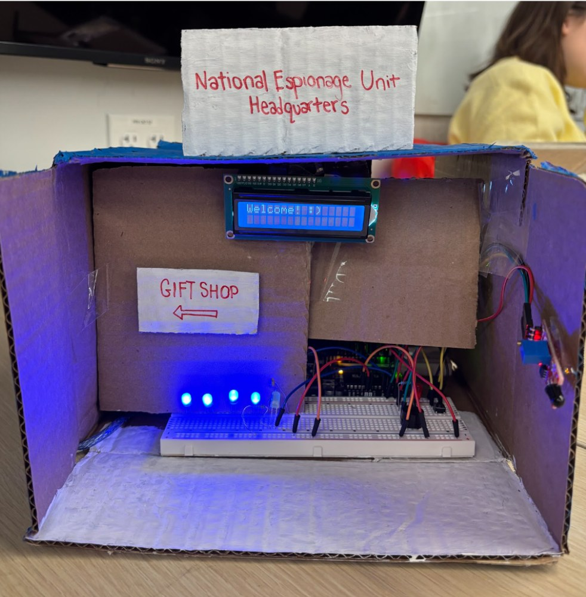
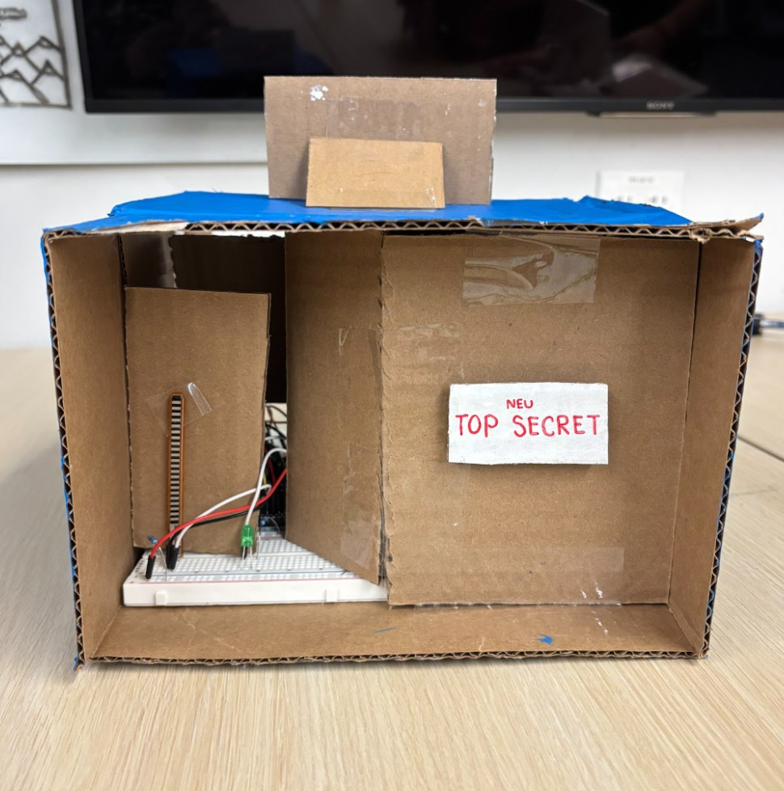
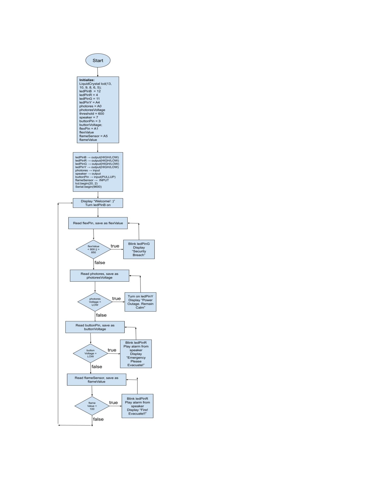

Sheet 01 / 04
Fall 2024
Arduino Spy Museum
Northeastern University — General Engineering (GE 1111), with Cecilia Kye





Overview
For my General Engineering course, from a selection of project options, my partner and I chose to build a cardboard "spy museum." The result was an interactive playground of many different Arduino components, all coming together to form a display for the "National Espionage Unit." The project integrated Arduino code and components to create a scale model, utilizing LEDs, push buttons, photoresistors, a flex sensor, thermal sensor, LCD screen, and a speaker to simulate real devices in an environment.
How it works
The spy museum enclosure housed a set of Sparkfun kit components to simulate real life devices that may be used in such a setting: LEDs for both lighting and alarms; push buttons to turn on devices and trigger alarms; photoresistors to trigger back up lights in the event of a power outage; a flex sensor to see if a door that was supposed to be closed off to the public had been opened; a thermal sensor to measure the heat in the museum in the event of a fire, an LCD screen to welcome visitors and display messages; and a speaker to mimic an alarm.
All of this was driven by C++ Arduino code my partner and I wrote to sequence the sensors and outputs together into one coherent experience.
Presenting it
We presented the finished museum to our class and professor, before later walking individual classmates through each station, and encouraging them to interact with the sensors themselves.